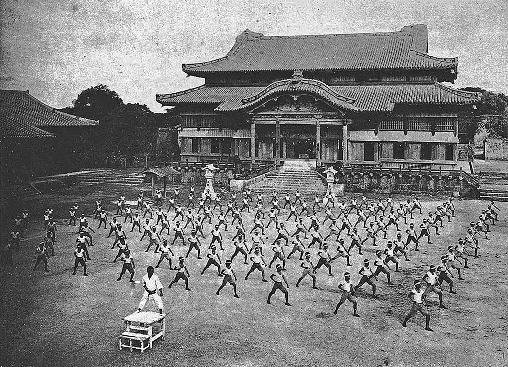

Karate, the Japanese word for “empty hands,” was born in the Okinawan Islands as a form of self-defense, at a time when weapons were banned by invading Japanese forces. It began as te (hand), a fighting style used by the natives of the Ryukyu Islands, and was later influenced by Chinese kenpō, introduced through the Chinese families that settled on Okinawa after trade relationships between China and the islands were established.
From three Okinawan cities, Shotokan Karate began:
- Shuri
- Naha
- Tomari
Each closely spaced but with very different societal demands, three separate styles emerged:
- Shuri-te
- Naha-te
- Tomari-te
Collectively, these styles were called Okinawa-te or tode (Chinese hand), and over time, the styles merged slightly to become just two: Shōrin-ryū, developed near Shuri and Tomari, and Shōrei-ryū, near Naha. Because of increasing Japanese influence, the label of te was eventually lengthened to karate-jutsu (Chinese hand art). It then changed to karate-do after an Okinawan master altered the meaning of the word kara (also pronounced tode) to mean “empty” rather than “Chinese hand.” karate-do translates into “the way of the empty hand.”